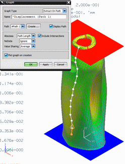

This section of the course includes activities in which you will create simple custom applications to automate a typical CAE workflow. You will learn how to:
Use the Journal utility to capture complex workflows.
Use Block UI Styler to create custom dialog boxes.
Combine and edit Journal and Block UI Styler code to create applications.
Create a custom toolbar to launch your applications.
